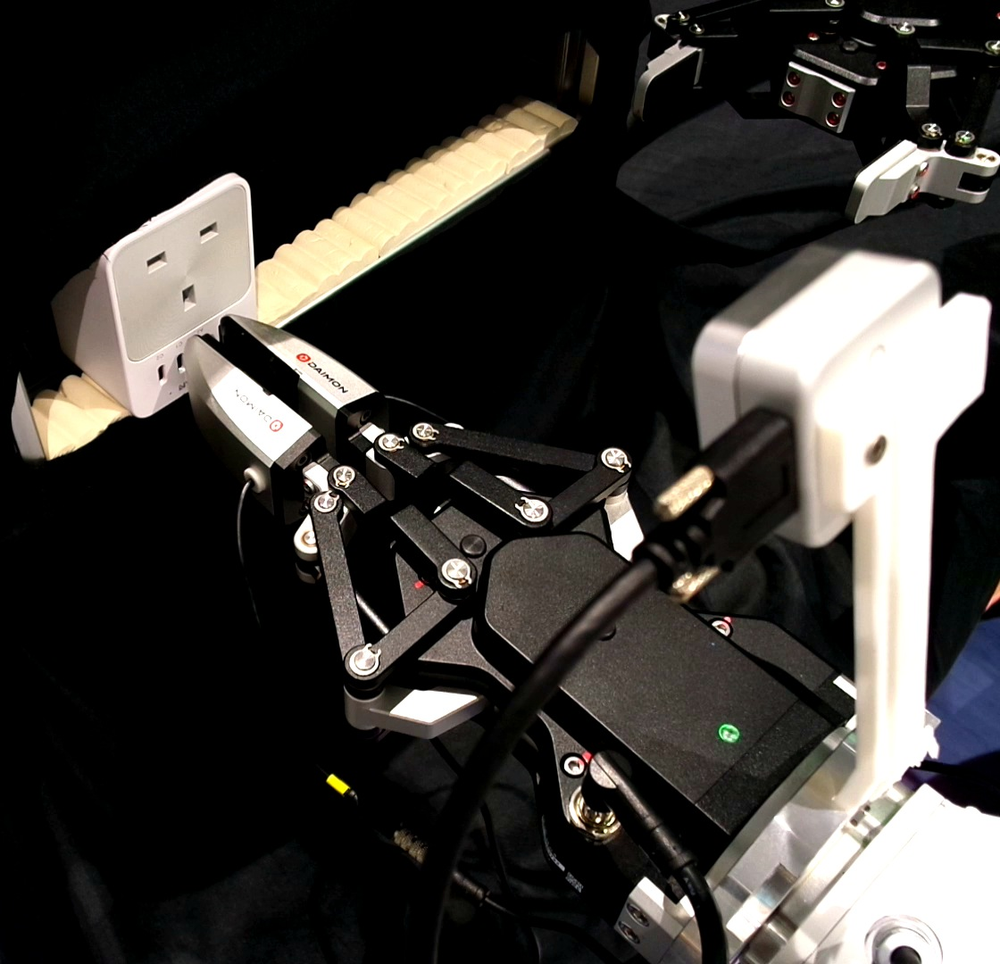

Real-robot experiments
- Robot platforms
- 2
- Task types
- 7
- Connector types
- 15
- Rokae insertion trials
- 150
- Total real-robot trials
- 280
15 connectors

Photo previewUSB-A insertion
Rokae
Agent process
Loading process…
Simulation experiments
Method
 Scene preview
Scene previewPick-and-place
Contact Harness (Astra)